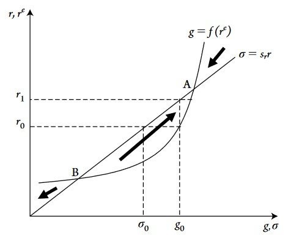

What follows is extensively based on the third chapter of Heterodox Macroeconomics: Models of of Demand, Distribution and Growth (2019) by Robert A. Blecker and Mark Setterfield
Roy Harrod: a Model of Unstable Growth
Roy Forbes Harrod (1900-1978) is an important figure in economics. The British economist is first and foremost known due to the Harrod-Domar model which is one of the first attempt to describe economic growth formally. Economists typically learned during their studies the Solow growth model, whose starting point is based on Harrod’s formal description of economic growth mechanics.
The third chapter of Heterodox Macroenomics, dedicated to Neo-Keynesian models (models strongly inspired by Keynes pioneer work) starts with Harrod’s model of unstable growth. This model was a first attempt to link keynes’ short term analysis to a model of long-run growth.
Three Growth Rates, First and Second Harrod Problems
Harrod distiguished three growth rates:
The actual growth rate
The rate of growth which is actually observed in the economy \(y = \frac{Y_{t}-Y_{t-1}}{Y_{t}}\)
Natural growth rate
Which is defined as \(y_N = q + n\), with n the rate of growth of labour and q the rate of growth of labor productivity.
This rate of growth comes from the definition of ouput at the full-employment level: \(Y_N = \frac{Y}{a_0}\) with \(a_0 = \frac{L}{Y}\) the labour-output ratio (how much labour is required per unit of output). The rate of change of \(Y_N\) is \(\widehat{Y_N} = n - \widehat{a_0}\). Since \(a_0\) is also the inverse of labour productivity \(\frac{1}{a_0} = Y/L\), \(-\widehat{a}\) is equivalent to labour productivity growth \(\widehat{Q} = q\).
This natural rate of growth can be interpreted as an upper limit, the maximum rate of growth that can be achieved in the long run. The limit comes from the fact that production (output level) is limited by labour supply constraint (since \(Y_N\) is the maximum level of output at full-employment).
Warranted rate of growth
Which is the rate of growth when investment is equal to savings \(S = I\).
How can we found this third rate of growth? We must first define the investment function (how the model thinks investment decisions are made):
\[ I_t = a_1(Y^e_t - Y_{t-1}) \]
With \(I_t\) investment at period \(t\), \(a1\) the full-capacity capital–output ratio (quantity of capital required to produce any given level of output) \(a_1 = \frac{K}{Y_K}\). This ratio can also be interpreted here as the additional quantity of capital needed to produce any additional output (the “at the margins” interpretation). This equation simply means that if agents at time \(t-1\) expect output a the next period \(t\) to be higher, \(Y^e_t > Y_{t-1}\), then investment at the next period \(t\) will be equal this this positive difference multiplied by the full-capacity capital–output ratio.
Why multiply by \(a_1\) ? If we define the actual quantity of capital which is utilized in the economy as \(K_u = uK\), \(u\) being the full capacity utilization rate \(u = Y/Y_k\), we can rewrite the actual quantity of utilized capital as \(K_u = uK = \frac{Y}{Y_k}K = a_1Y\)
The change of the amount of capital actually used in the production process is thus \(\Delta{K_u} = a_1\Delta{Y}\)
Investment basically means that new capital is bought and added to the stock of capital available for production: \(I = \Delta{K}\), so that when investment occurs, capital stock increases by \(\Delta K\). If we consider that expectations are realized, \(\Delta{Y} = \Delta{Y^e}\), we can write
\[ I = \Delta K = a_1\Delta Y = \Delta K_u = a_1\Delta{Y} \] Thus, \(a_1\) is not arbitrary, but conformed to the known quantity of capital required to expand production through investment.
We have thus the investment function:
\[ I_t = a_1(Y^e_t - Y_{t-1}) \] The saving function, on the other hand, is equal to:
\[ S_t = sY_t \]
With \(s\) the propensity to save. This saving function simply means that the total saving is a fixed proportion of total income (production).
The last steps to find the warranted rate of growth is to equate the savings and investment function, after making the assumption that expectations are realized:
\[ \begin{aligned} Y_t = Y^e_t \\ S_t = I_t \\ s_tY = a_1(Y_t - Y_{t-1}) \\ \frac{s}{a_1} = \frac{Y_t-Y_{t-1}}{Y_t} \end{aligned} \]
The warranted rate of growth is thus
\[y_w = \frac{s}{a_1}\]
To sum up, the three rates of growth are
- Actual Growth Rate
\(y = \frac{Y_t-Y_{t-1}}{Y_t}\)
- Natural Growth Rate
\(y_n = q + n\)
- Warranted Growth Rate
\(y_w = \frac{s}{a_1}\)
The First Harrod Problem
The first Harrod problem states that there is no mechanisms that would ensure a persistent or non-accidental equality between the three growth rates, thus the equality
\[ y = \frac{s}{a_1} = \bar{q} + \bar{n} \] is possible, but as the manual puts it, not likely. The reason is that what influences the warranted rate of growth and the natural rate of growth are independent of each other.
The Second Harrod Problem
The second Harrod problem states that the warranted rate of growth \(y_w = s/a_1\) is unstable. That means that any deviation of the rate of growth from the warranted rate will be self-reinforcing.
To see this, we start with the equality between savings and investment:
\[ \begin{aligned} I = S \\ I_t = sY_t \\ Y_t = \frac{I_t}{s} \\ \end{aligned} \]
Then by substituting \(I_t\) by the investment function \(I_t = a_1(Y^e_t - Y_{t-1})\):
\[ Y_t = \frac{a_1(Y^e_t - Y_{t-1})}{s} = \frac{Y^e_t - Y_{t-1}}{y_w} \] Note that here \(a_1/s\) is the inverse of the warranted rate of growth \(y_w\), this is why \(y_w\) appears at the denominator. If we divide both sides of the equation above by the expected rate of growth \(Y^e_t\), we get:
\[\frac{Y_t}{y^e_t} = \frac{y^e}{y_w}\]
\(y^e\) comes from the fact that we divided \(Y^e_t - Y_{t-1}\) by \(Y^e_t\), which is the rate of growth of expected growth rate. This equation above simply shows that, if expectations are realized (\(Y_t = Y^e_t\), this is a condition for the warranted rate of growth), and \(y^e = y_w\), then we have an equilibrium between the actual growth rate and warranted growth rate
\[y^e = y = y_w\]
The second Harrod problem explains that any deviation of \(y\) from \(y_w\) will be self-reinforcing. If \(y<y_w\), there will be a downwards pressure on \(y\), thus a persistent recession. Conversely, if \(y>y_w\), there will be an upwards pressure on \(y\), hence a self-reinforcing economic expansion.
These mechanisms are the results of how the model conceive the change of the expected growth rate \(y^e_t\). If at period \(t\) the growth rate \(y_t\) is greater than the expected growth rate \(y_t>y^e_t\), then at period \(t+1\) agents will revise their expected growth rate upward \(y^e_{t+1} > y^e_t\). This simple behavioral principle can be summarized as:
\[y_t > y^e_t \Rightarrow y^e_{t+1} >y^e_t\]
\[y_t < y^e_t \Rightarrow y^e_{t+1} <y^e_t\]
The graph above shows that any deviation from the equilibrium point, at which \(y_w = y = y^e\) will lead either to permanent boom or bust. Note that the second Harrod problem depends on how expectations are revised: here we consider expectations as adaptive: expectations will be based on what happened at the previous period.
Interactions between actual, warranted and natural growth rates
Two scenarios can be considered.
First, when \(y_w<y_N\), the economy will be prone to boom and bust behavior. If the actual growth rate is greater than the warranted growth rate, the former will be ever-increasing until the economy will “overheat” when the actual growth rate is superior to the natural rate (which is an upper limit above which there will be exhaustion of labor force and a likely wage-inflation spiral).
Second, if \(y_w>y_N\), the economy is in a situation of chronic depression. Since the actual growth rate cannot be permanently equal to the warranted rate in this situation (because of the upper limit \(y_N\)), the actual rate of growth would tend to permanently fall until government policies would likely start to intervene.
Finally, this model has consequence for economic policy. Increasing the saving propensity \(s\) to boost growth is not a good idea if it is not accompanied by a rise in aggregate demand, in which case increased saving means reduced consumption demand and investment demand is not guaranteed to offset the fall in consumption.
The Early Kaldorian Model of Growth and Distribution
This model is very close to the Classical-Marxian model I described here. The main difference is the fact that the early Kaldorian model (EKM) includes the saving propensity out of wages \(s_w\) whereas the classical-marxian model only includes savings out of profits.
Recall that the classical-marxian saving function was
\(S/K= s_r(r-r_min)\)
The EKM introduces savings out of wages, with a propensity lower than savings out of profits. Total savings is thus a weighted average bewteen savings out of wages and profits:
\[S = [(1-\pi)s_w+\pi s_r]Y\]
\(\pi\) is the profit share, \((1-\pi)\) the wage share, with \(0<s_w < s_r<1\).
The model makes some assumptions, which are globally similar to the C-M model:
EKM assumes that labor productivity is constant \(q=0\), hence the natural rate of growth is simply \(y_N=n\).
Like the Classical-Marxian model, growth rate is the rate of capital accumulation \(g = \Delta K/K\).
Full or constant capacity rate of utilization \(u\)
Constancy and exogenous capital-output and labor-output ratios \(a_0,a_1\)
To maintain full employment, capital accumulate rate must grow the same as the investment rate and labor supply growth rate:
\(g = \frac{I}{K} = n\)
As usual, we equate \(S = I\), to find the equilibrium:
\[g = n = \frac{I}{K} = \frac{S}{K} = \frac{[(1-\pi)s_w+\pi s_r]Y}{K} = \frac{(s_r-s_w)\pi + s_w}{a_1}\]
The equilibrium profit share is thus
\[\pi^* = \frac{a_1 n - s_w}{s_r - s_w}\]
And the equilibrium growth rate is
\[g^* = n = \frac{s^*}{a_1}\]
A major difference with the C-M model is that instead of considering an exogenous wage share or real wage and deriving the profit rate and growth rate from it, Kaldor set the growth rate equal to its natural rate and derive the profit/wage share and saving propensity necessary to reach this equilibrium. For the EKM to work, wage and profit shares must be flexible, there must be active government stabilization policies (fiscal & monetary).
EKM has the implications that for the economy to grow faster only with higher inequality.
Neo-Robinsonian Model
The major point of this model is to introduce a separation between investment and savings. All the models we saw until now did not distinguish between savings and investment (as the classical-marxian model).
The main equations of the model are thus a saving function out of profits and a desired investment as a positive function of expected profits.
- Saving function
\[\sigma = s_rr\] With \(\sigma\) savings.
- Desired investment function
\[g = f(r^e)\]
\(g\) being investment. This function is assumed to have positive but diminishing marginal impact of expected profits on desired investment (\(f'>0, f''<0\)).

Point A on the graph above is a stable equilibrium whereas point B is an unstable one. The graph has to be read as follows: at \(r_0\) the saving rate is smaller than the (desired) growth rate \(g_0\). At \(g_0\), the corresponding profit rate is \(r_1\), which is above the profit rate related to actual saving rate (\(r_0\)). Firms have thus invested in way that will make profits rise and they will thus revise their profits expectations upwards: at \(r_1\) they will invest at a level slighlty above \(g_0\), which will again push up the profit rate until point A, at which \(g=\sigma\) is reached.
On the other hand, if we start at any profit rate below point B, the desired rate of investment will lead to a growth rate that will lead in return to a lower profit rate, firms will revise their profit rate expectations downwards and thus reduce their desired rate of investment, which will then lead to an even lower growth and profit rates and so on. Below point B, this process does not end automatically, there must be for example government stabilization. Above point A, however, the process is the same as described above in this paragraph, but it stabilizes at point A. Note that what happens below point B is strongly similar to the second Harrod problem.
The Neo-Robinsonian model combines the model above with the inverse wage-profit relationship we saw in the C-M model. The desired investment rate is simplified to
\(g = f_0+f_1r\)
With the same saving function \(\sigma = s_rr\) and the inverse profit-wage relationship \(w =\frac{1-a_1 r}{a_0}\)
To find the equilibrium levels of growth, profit and wage rates, we set investment equals to savings \(\sigma = g\) and solve for:
\[r^* = \frac{f_0}{s_r-f_1}\]
and
\[g^*=\frac{s_rf_0}{s_r-f_1}\]
and
\[w^* = \frac{1}{a_0} - \frac{a_1}{a_0}(\frac{f_0}{s_r-f_1})\]
Note that in this model the real wage and wage share are flexible, but nominal wage is not.
In this model, an increase in the propensity to save leads to lower equilibrium level of growth and profit rates and a higher equilibrium real wage. The mechanism is that an increase in the propensity to save, with an unchanged desired investment curve (which means that saving propensity increases without changing firms’ willingness to invest), reduces aggregate demand through a reduction in consumption demand. With falling demand, profits realized from actual investment expenditures also fall.

Graphically, the saving curve rotates down to the right. Why does the real wage increase? Recall that in this model, nominal wage is fixed. A change in real wage must then come from a change in the price level. In the case of higher propensity to save, the latter has depressed aggregate demand and growth, which reduce inflation \(\searrow \hat{P}\).
What if we consider a shift in the desired investment curve? An exemple would be a rise in \(f_0\), which can be interpreted as the level of confidence of firms: the higher their confidence in the economy, the higher they will invest for every level of expected profit rates. A rise in \(f_0\) would shift the desired investment curve \(g = f_0+f_1r\) to the right, profit rate would rise, growth rate would rise, but real wage would decrease. Real wage decreases because inflation increases as a result of higher aggregate demand and thus excess demand in the goods market. Note that inflation in the Neo-robinsonian model is always “demand-pushed”, that is, led by excess or lower demand in the market for goods and services.
Marglin’s neo-Marxian/neo-Keynesian synthesis
Since the assumption of fixed nominal wage was considered as unrealistic, mainly because it is very likely that workers would bargain for higher wages in the case of higher inflation as described above, Marglin has constructed model which is a mixed between the classical-marxian model and the neo-robinsonian model.